Color gets most of the credit in home decor, but texture is often what actually makes a room feel finished. A space built entirely from smooth, flat surfaces can look styled on paper and still feel oddly cold in person, texture is usually the missing piece.
None of the ideas below require a full redesign. Most work as layers on top of what's already there, a rug, a pillow, a lighting swap, each one adding a bit more depth to a room that might otherwise feel flat.

18 Ways to Bring In Texture
1. Woven Wall Art
For anyone not ready to commit to a full mural or a 3D tile wall, woven wall hangings offer a gentler alternative.
They bring softness, warmth, and a handcrafted quality to a wall that flat framed art can't quite replicate.
They also come in enough shapes and styles to suit almost any room, from a single statement piece to a small cluster.
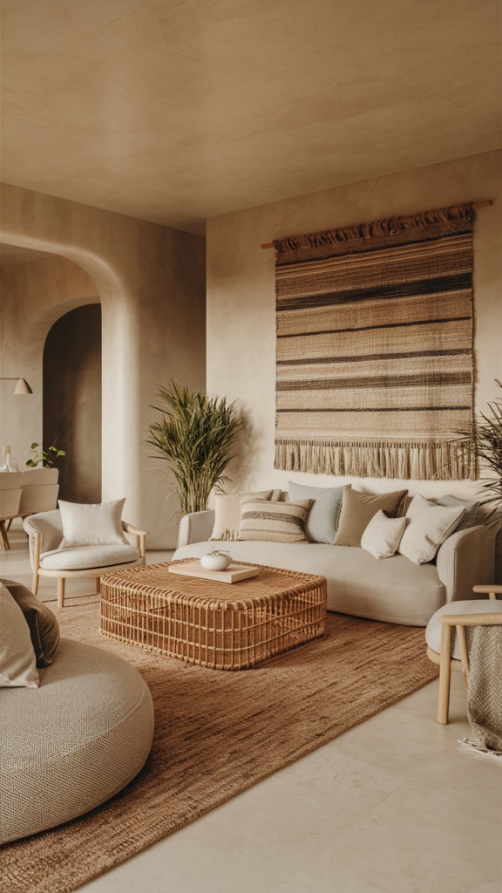
2. Layered Window Treatments
Combining sheer curtains, woven blinds, and heavy drapes together builds a genuinely dimensional window treatment, rather than settling for just one layer.
It also gives far more control over light and privacy than a single curtain panel ever could, since each layer can be adjusted independently.
The layered effect reads as considerably more finished than a single flat treatment, even though it uses materials most homes already have somewhere.
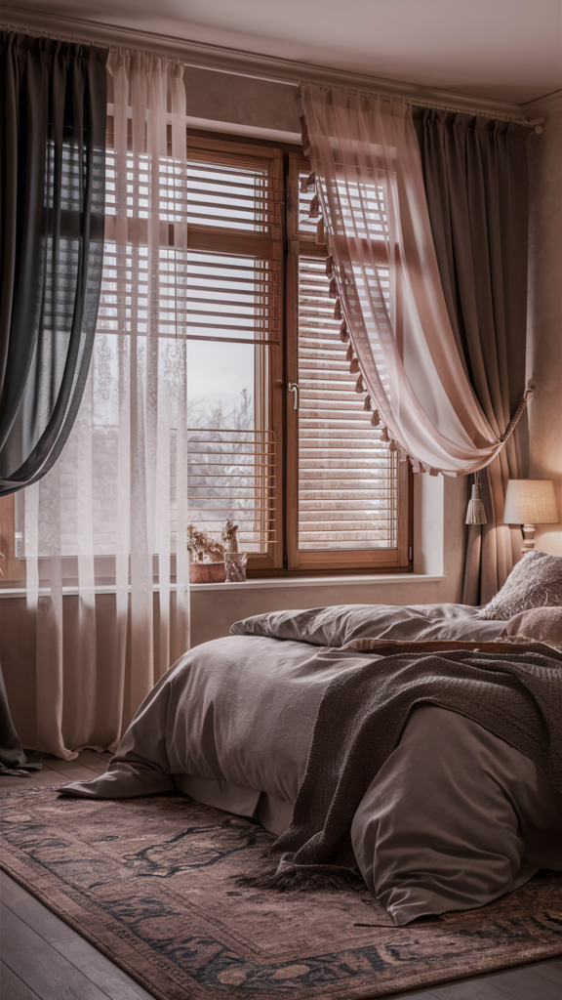
3. Leather for Grown-Up Texture
Leather, real or faux, brings instant sophistication to a room.
It also ages well over time, developing a patina that makes a space feel more lived-in and layered rather than simply worn down.
A leather armchair, ottoman, or set of accent pillows all bring that same quality without requiring a full furniture overhaul.
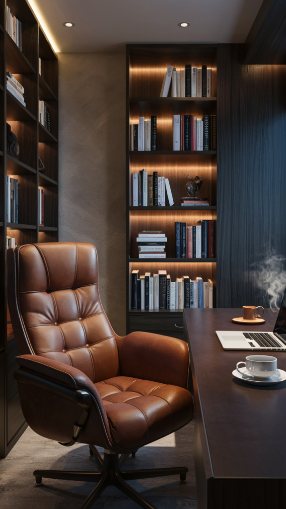
4. Natural Stone Accents
There's something genuinely grounding about stone that other materials can't replicate.
A slate serving tray, a marble countertop, or a small stone sculpture all bring that same quality into a room, whatever the scale.
Stone reads as visually warm despite being cool to the touch, which is part of what makes it such an effective texture choice.
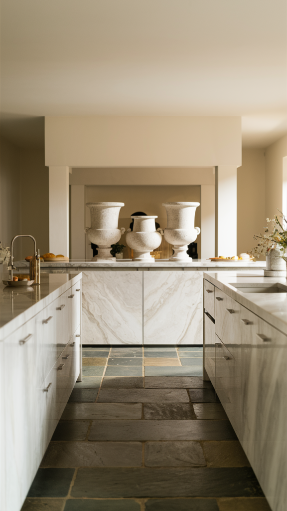
5. Embroidered Throw Pillows
Embroidered or tufted throw pillows are one of the easiest ways to level up a sofa without committing to anything permanent.
Mixing patterns and textures, a bouclé pillow next to an embroidered one, a woven texture beside a smooth velvet, adds genuine depth.
Pillows also offer a low-risk way to test out a texture or color before investing in something larger, like a piece of furniture.
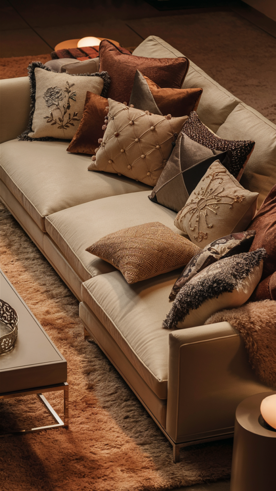
6. Plants With Varied Textures
Not all greenery brings the same texture to a room, layering a fluffy fern, a leathery snake plant, a glossy pothos, and a chunky succulent together creates far more visual variety than a single plant type.
Placing them in terra cotta, matte ceramic, or woven baskets pushes the tactile appeal even further.
The combination ends up feeling lush and intentional rather than like a single repeated houseplant.
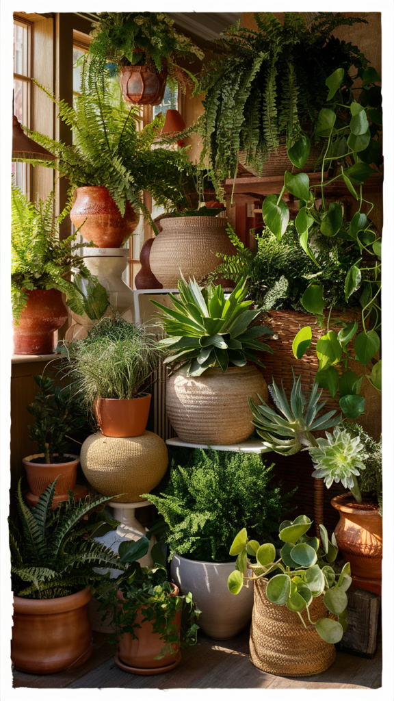
7. High-Pile or Braided Rugs
Texture underfoot is genuinely underrated, and a high-pile or braided rug delivers more of it than a flat-weave ever could.
A shag rug, a chunky braided jute piece, or a textured wool option all bring real comfort to a room beyond their visual appeal.
It's one of the easiest changes to make that guests actually notice without being able to pinpoint exactly why the room feels cozier.
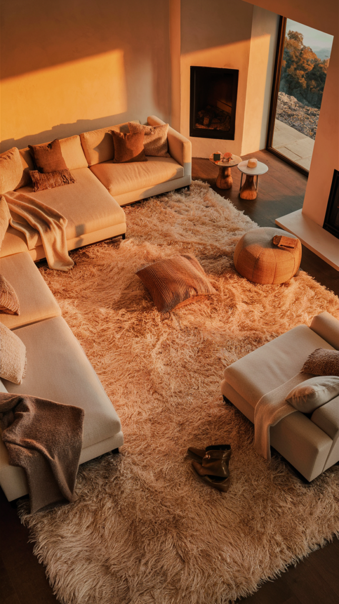
8. Metal With Personality
Not all metal finishes read the same, hammered, brushed, or aged finishes bring an edge that smooth chrome can't match.
Used in hardware, light fixtures, or small decor accents, these finishes add a slightly industrial, lived-in feel.
It works especially well in a room that's already leaning toward high contrast between materials.
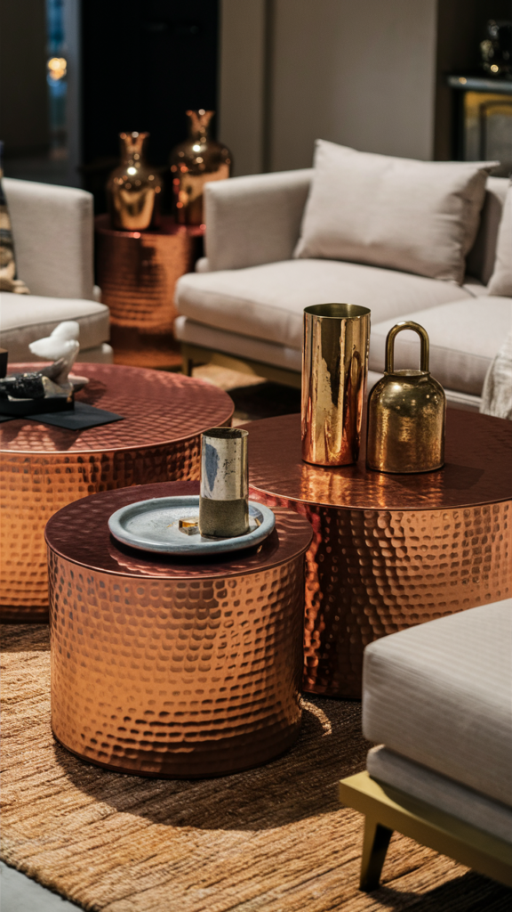
9. Textured Tile Backsplashes
Skipping the standard subway tile in favor of something textured, scalloped, fluted, or hand-glazed, brings real character to a kitchen or bathroom.
These are exactly the rooms where a bit of extra texture tends to go unnoticed as an afterthought and appreciated as a genuine design choice.
It's a relatively small surface area to commit to, which makes it a lower-risk way to try something bolder.
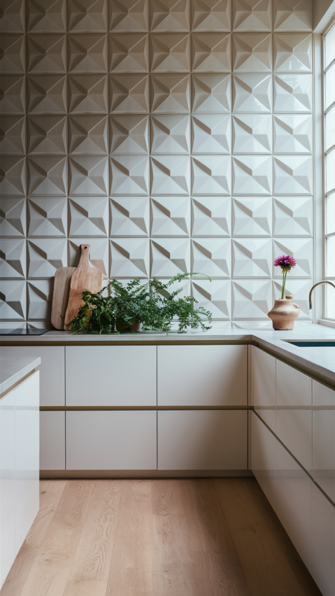
10. Macrame as Wall Jewelry
For an effortless boho feel, macrame does a lot of work with very little material.
Hung above a bed, in a hallway, or layered into a gallery wall, it adds softness and handmade texture that flat art can't replicate.
A single well-placed macrame piece can anchor an entire wall on its own.
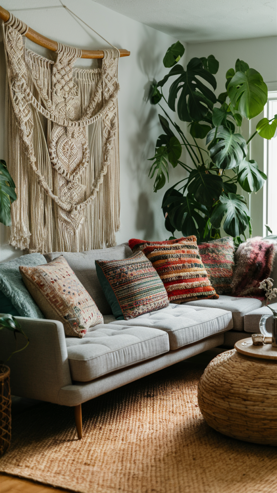
11. Sculptural Light Fixtures
Lighting doesn't have to be purely functional, a frosted glass pendant, a rattan lantern, or a hammered metal sconce adds real visual texture on top of its practical job.
The shadows and reflections these fixtures throw change the mood of a room instantly, in a way a plain bulb simply can't.
It's an easy upgrade for a space that otherwise relies entirely on flat, even light.
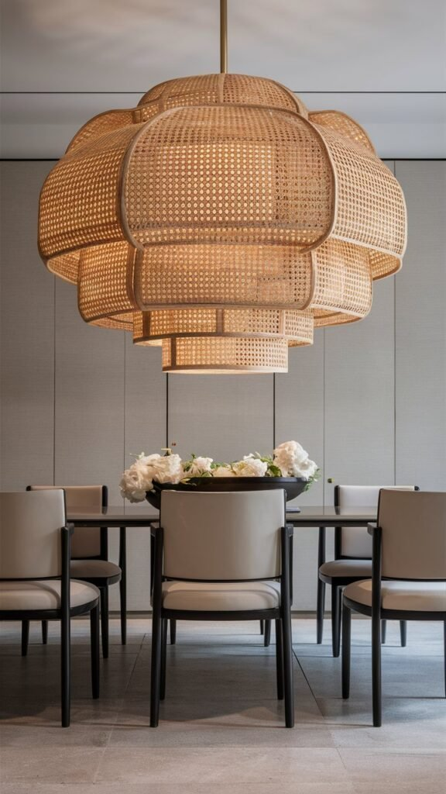
12. Bedding That Feels as Good as It Looks
Layered bedding isn't reserved for hotel rooms, a quilted cover, embroidered sheets, and a chunky knit throw together build a bed that genuinely invites a nap.
Mixing textures like linen, waffle-weave, and velvet across pillows and throws adds depth without needing to change the color palette at all.
A well-layered bed also tends to make the whole bedroom feel more finished, even if nothing else in the room has changed.
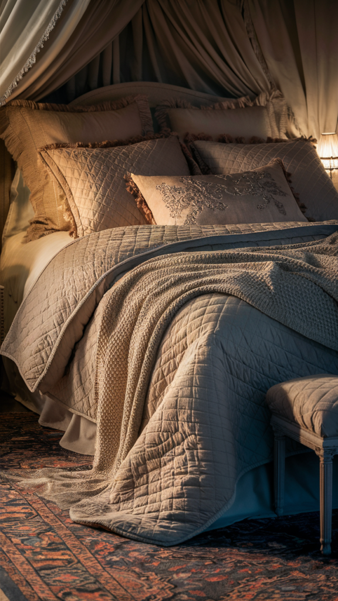
13. Wood Details That Wow
Wood texture isn't limited to flooring, furniture legs, trim, beams, and small accent pieces all carry the same grain, knots, and natural imperfections that make wood so visually interesting.
Even a minimalist space tends to benefit from a bit of wood somewhere in the mix, since it warms up an otherwise cool palette almost instantly.
It's one of the easiest textures to introduce without committing to a full redesign.
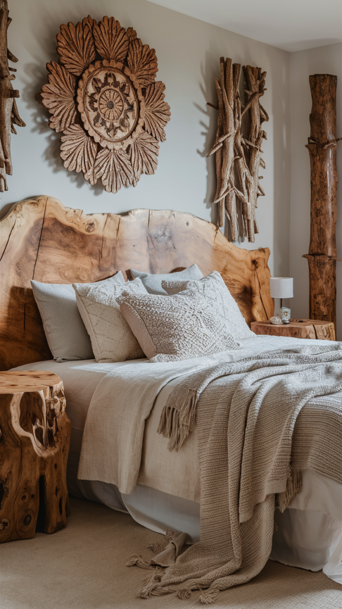
14. Curtains That Do More Than Block Light
Plain cotton panels are the default, but velvet, linen, or embroidered curtains add considerably more character to a window.
Textured curtains catch and diffuse light differently depending on the material, which changes the whole feel of a room throughout the day.
Linen in particular has a way of making a room feel softer the moment a breeze moves through it.
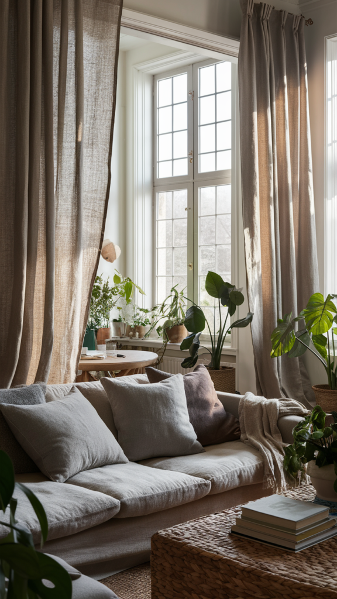
15. Throw Down Some Faux Fur
Faux fur brings a level of coziness that's hard to replicate with any other material.
A faux fur throw draped over a bed or a few fluffy pillows added to a couch instantly makes a space feel snuggly.
White or gray leans into a Scandinavian-chic look, while darker tones bring more richness and moodiness to the same idea.
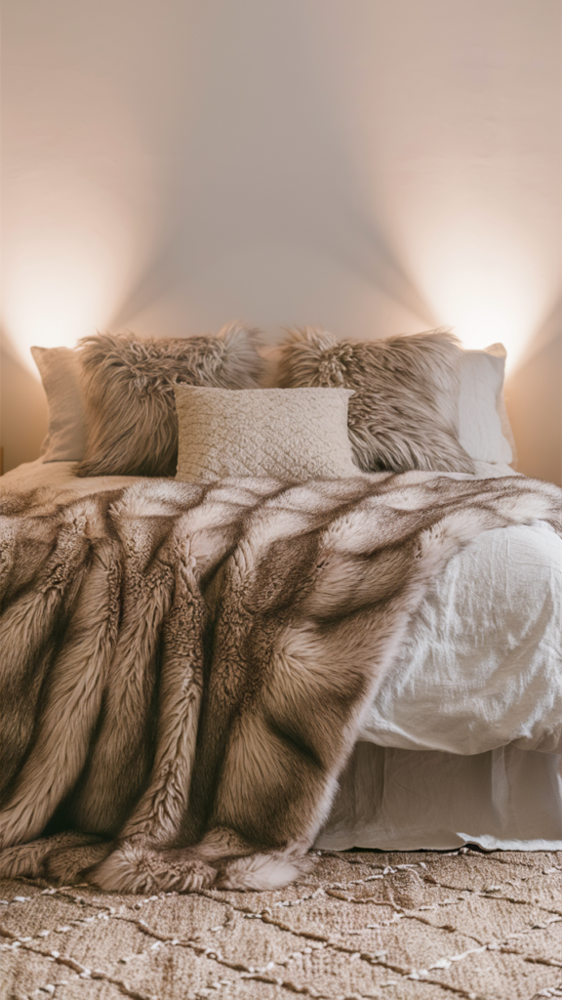
16. Baskets That Do More Than Store Stuff
Woven baskets quietly do more work than almost any other texture piece in a room.
Beyond hiding clutter, they bring a natural, earthy quality wherever they're placed, firewood, blankets, magazines, or toys all have a home inside one.
They also tend to look effortlessly styled even when they're just holding whatever needed somewhere to go.
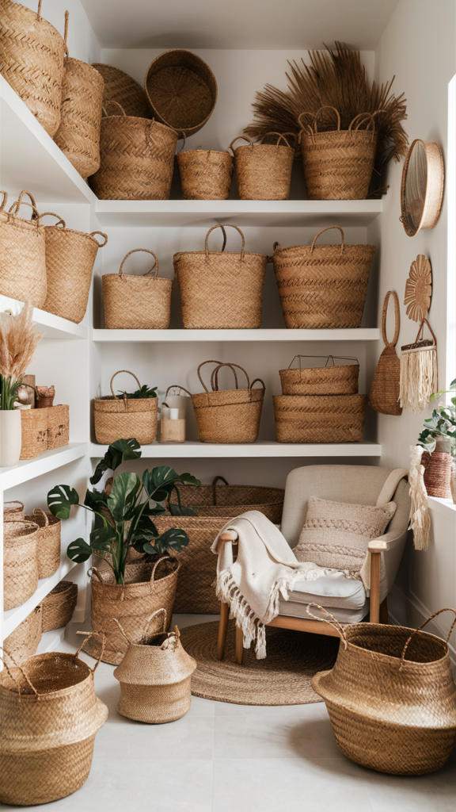
17. Velvet Furniture for Instant Glam
Velvet brings a sense of polish to a room without requiring much effort to pull off.
A velvet armchair, a sofa, or even just a few throw pillows adds immediate richness, deep jewel tones like emerald or sapphire lean dramatic, while dusty pastels keep things calmer.
Beyond the look, velvet also genuinely feels good to sit in, which gives it a practical edge over some of the flashier texture options.
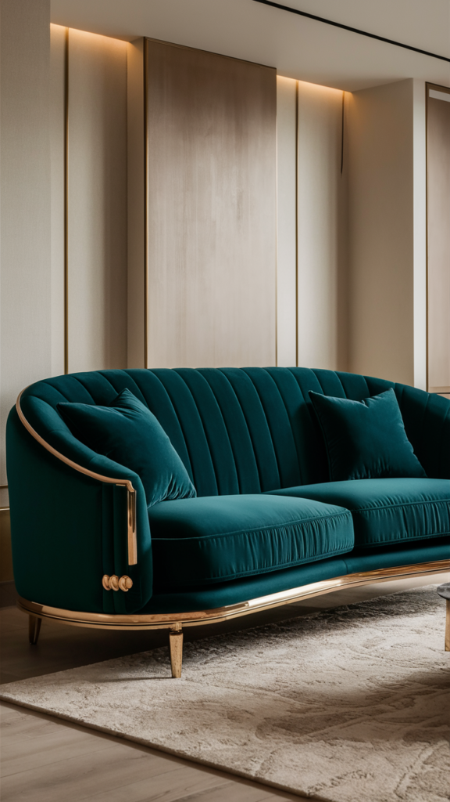
18. Layer Rugs Like a Pro
Layering rugs is one of the simplest ways to bring real texture into a room.
Starting with a large jute base, then layering a softer wool or a colorful Persian rug on top, builds a natural-meets-refined mix that a single rug can't achieve on its own.
The layered look also adds genuine warmth underfoot, which matters more than most people expect once it's actually there.
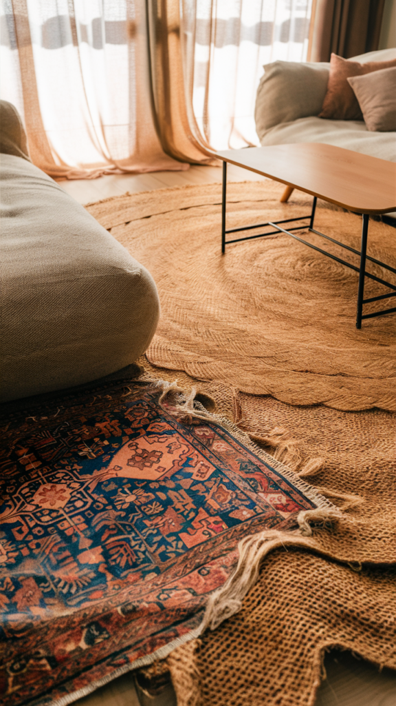
Final Thoughts
None of these eighteen ideas require a full redecorate to make a real difference. A layered rug, a velvet pillow, or a few varied houseplants can shift a flat room into one that genuinely invites touch.
Texture rewards layering more than any single big purchase, a handful of small, varied additions will usually do more for a room than one large, uniform one ever could.